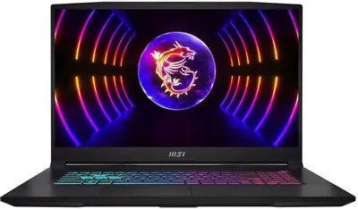

MSI GF76 Katana 17 оборудован экраном 17.3 дюйма IPS с матовой поверхностью против бликов и частотой 144 Гц. Акустическая система Nahimic формирует насыщенное реалистичное звучание. Для удобства игры в любое время реализована эргономичная клавиатура со светодиодной подсветкой RGB.
135 999₽ 141 999₽